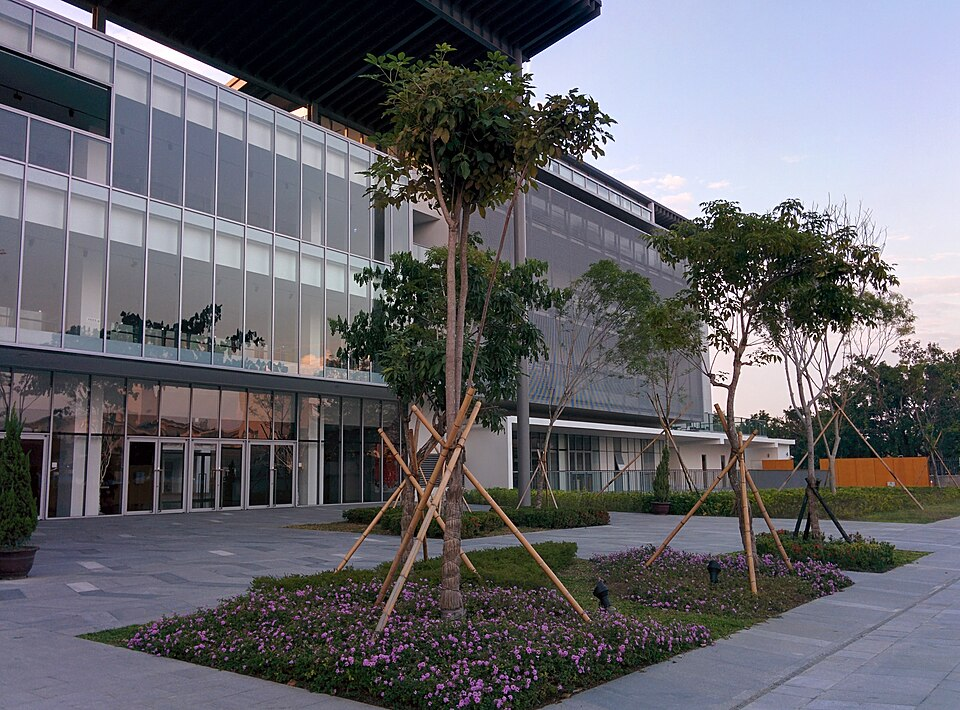

가오슝 아메리칸 스쿨 교사 건물 · 사진: Takumi Fujimoto / Wikimedia Commons, CC BY-SA 4.0
가오슝 아메리칸 스쿨(Kaohsiung American School, KAS) — 미국식 졸업장인데 중등은 IB로 배웁니다
⚠️ 이름 혼동 주의 — "아메리칸 스쿨"은 도시마다 있습니다. 같은 대만 안에도 타이베이 아메리칸 스쿨(TAS)이 따로 있고, 싱가포르 아메리칸 스쿨(SAS)·상하이 아메리칸 스쿨(SAS)도 전혀 다른 학교입니다. 한국어 후기를 읽으실 때 어느 도시 학교 이야기인지부터 확인하세요.
1. 어떤 학교인가
가오슝 아메리칸 스쿨은 1989년에 설립된 것으로 알려진 비영리 사립 공학 학교로, 대만 제2의 도시인 가오슝에 있습니다. 대만 남부 산업 지대의 외국인 가정을 위해 세워진 학교입니다.
캠퍼스는 쭤잉구(左營區), 연지담(롄츠탄) 일대에 있습니다. 현재 캠퍼스는 2015년에 문을 연 것으로 알려져 있고, 친환경 건축 인증을 받은 건물로 소개됩니다. 즉 오래된 학교지만 건물은 비교적 새것입니다. 한국어로 된 옛 후기에 나오는 위치와 지금 주소가 다를 수 있으니 글의 작성 연도부터 보시기 바랍니다.
학년은 유아 과정부터 12학년까지이고, 인증은 WASC(미국 서부 학교·대학 협회)입니다. 졸업생에게는 미국식 고등학교 졸업장을 수여하는 것으로 알려져 있습니다.
※ 학생 수·학비·연도별 시험 결과처럼 해마다 달라지는 수치는 이 글에 적지 않았습니다. 학교 요강을 직접 확인하세요.
2. 핵심 — 미국식 학교인데 중등은 IB 틀로 돌아갑니다
여기가 이 학교의 가장 큰 특징입니다. 알려진 바로는 수업의 바탕은 미국 기준의 교육과정(영어는 공통 핵심 기준, 수학은 국제학교용 AERO 기준, 과학은 차세대 과학 기준 계열)인데, 6~10학년은 IB 중등 과정(MYP)으로, 11~12학년은 IB 디플로마(DP)로 운영된다고 소개됩니다. 여기에 AP 과목도 함께 제공되는 것으로 알려져 있습니다.
이 구조를 한국 가정이 이해하기 쉽게 풀면 이렇습니다. "무엇을 배우는가"는 미국식, "어떻게 평가받는가"는 IB 쪽입니다. 그래서 아이가 체감하는 변화는 과목이 늘어나는 것이 아니라 채점 방식이 바뀌는 것입니다.
| 구간 | 운영 방식(알려진 바) | 한국 학생이 가장 먼저 부딪히는 것 |
|---|---|---|
| 초등 | 미국 기준 교육과정 | 읽기 분량과 발표(생각을 영어로 말하기) |
| 6~10학년 | IB 중등 과정(MYP) | 기준표(루브릭) 채점 — 맞았는지보다 요구한 형식대로 썼는지 |
| 11~12학년 | IB 디플로마(DP) + AP 과목 제공 | 2년짜리 기한 관리(과제가 길고 겹침) |
| 졸업 서류 | 미국식 고교 졸업장 | 성적표 읽는 법이 한국과 다름 |
표의 두 번째 줄이 한국에서 온 아이들이 가장 많이 흔들리는 지점입니다. 한국 학교에서 잘하던 아이가 답을 맞혔는데 점수가 낮게 나오는 경험을 처음 합니다. MYP는 과제마다 기준표가 붙고, 그 기준표가 요구하는 서술의 모양이 따로 있기 때문입니다. → 형성평가·총괄평가 · 성적표 읽는 법
3. 마지막 2년 — 길이 하나가 아닙니다
고등 2년에 대해서는 모든 학생이 IB 디플로마를 받을 기회를 갖는다고 소개됩니다. 뒤집어 말하면 디플로마 전 과정을 이수하는 길과, 졸업 요건을 채우면서 필요한 과목만 담는 길이 함께 있다는 뜻으로 읽힙니다.
이때 흔한 오해 하나를 짚어 드리겠습니다. 디플로마를 하지 않는 쪽이 "쉬운 길"은 아닙니다. 과제 분량은 줄어들 수 있지만, 대신 스스로 설계할 것이 늘어납니다. 어떤 과목을 어느 수준으로 담아야 목표 대학의 요구를 채우는지를 가정이 직접 챙겨야 합니다. → 과목 신청(Course Selection)
선택 기준을 단순하게 정리하면 이렇습니다.
· 목표가 영국·유럽·홍콩 쪽이라면 디플로마 쪽이 설명하기 편합니다(점수 체계가 그대로 쓰입니다). → IB DP 점수
· 목표가 미국 쪽이라면 졸업장 + 과목 조합 + 표준화 시험으로 가는 길도 넓습니다. → AP 과목 선택
· 아이의 글쓰기 체력이 아직 부족하다면, 디플로마 2년을 버티는 것 자체가 과제입니다. 11학년이 되기 1년 전에 영어 쓰기를 올려 두셔야 합니다.
※ 실제 개설 과목과 조건은 해마다 달라집니다. 학년이 올라가기 전에 학교에 직접 확인하시기 바랍니다.
4. 가오슝이라는 도시 — 타이베이와 무엇이 다른가
대만 북부 타이베이에는 타이베이 아메리칸 스쿨과 타이베이 유럽학교처럼 선택지가 여럿 있습니다. 가오슝은 그렇지 않습니다. 선택지가 적다는 것은 두 가지를 뜻합니다.
· ① 자리 확보가 비교 보다 먼저입니다. 희망 학년에 결원이 있는지를 먼저 묻고, 발령이 확정되기 전이라도 시기를 알려 두시는 편이 낫습니다. → 편입·전학 총정리
· ② 한국인 가정이 적습니다. 앞서 겪은 분에게 정보를 얻기 어렵고, 현지에서 한국어로 설명해 주는 선생님을 찾기도 쉽지 않습니다. 초기 몇 달의 학습 공백이 길어지는 이유입니다.
반대로 생활 면에서는 남부 특유의 장점이 있습니다. 통근·통학 거리가 짧고, 주거비 부담이 타이베이보다 가벼운 편으로 알려져 있습니다. 학교가 하나로 정해져 있으니 집을 학교 기준으로 고르기도 오히려 쉽습니다.
5. 한국(주재원) 학생이 겪는 어려움
· ① "영어는 되는데 점수가 안 오른다." 회화가 아니라 학습 영어의 문제입니다. 기준표가 요구하는 지시어(analyse·evaluate·justify)를 읽어 내지 못하면 아무리 써도 중간 점수에 머뭅니다. → 영어 공부법
· ② "수학은 아는데 서술에서 깎인다." 계산은 한국에서 충분히 훈련돼 있는데 영어 용어와 풀이 과정 서술에서 막힙니다. → 알지브라 공부법
· ③ "제출은 했는데 점수가 낮다." 장기 과제는 중간 점검 지점이 따로 있고, 그 지점을 놓치면 마지막에 되돌릴 수 없습니다. → 숙제·과제 관리
· ④ 중국어가 과목으로 들어옵니다. 대만은 번체자를 쓰므로 간체자 교재로 배운 아이는 처음에 당황합니다. 한국 학생은 한자어 덕을 보지만 읽기와 쓰기 글자체가 다르다는 점은 미리 알고 가셔야 합니다. → 중국어(HSK)
6. 그래서 이렇게 준비합니다
· 첫째, 합류 학년부터 확인합니다. 6학년 이상으로 들어간다면 바로 MYP 구간입니다. 기준표 채점에 적응하는 것이 1순위입니다.
· 둘째, 영어는 "읽고 쓰는 영어"로 좁힙니다. 교과서 지문을 읽고 요약하는 연습, 지시어대로 문단을 구성하는 연습입니다.
· 셋째, 수학은 용어와 서술을 먼저, 진도는 그다음입니다.
· 넷째, 11학년 1년 전에 결정 준비를 합니다. 디플로마를 할지, 과목을 어떻게 담을지는 그 전해에 결정됩니다. → 과목 신청 · 학년 체계
7. 가오슝의 강점 — 시차 1시간, 화상과외가 가장 편한 지역
대만은 한국과 시차가 1시간입니다. 아이가 학교에서 돌아온 저녁 시간이 한국 선생님의 수업 가능 시간과 거의 그대로 겹칩니다. 현지에 한국인 선생님이 적다는 약점을 화상 수업으로 그대로 메울 수 있는 조건입니다.
권해 드리는 방식은 단순합니다. 그 과목 수업이 있는 날의 전날 저녁에 한 번, 과제가 나온 주에 한 번 더 봅니다. 마감 전날 몰아서 보는 것보다 성적이 훨씬 안정적으로 올라갑니다.
정리
가오슝 아메리칸 스쿨은 1989년 설립된 것으로 알려진 미국식 학교이고, 중등은 IB 중등 과정, 고등은 IB 디플로마로 운영되며 졸업장은 미국식이라는 점이 가장 큰 특징입니다. 그래서 아이가 먼저 부딪히는 것은 과목이 아니라 기준표 채점입니다. 가오슝은 선택지가 적은 대신 집·학교·생활 동선을 단순하게 짤 수 있는 도시이고, 시차가 1시간이라 한국 수업을 그대로 이어 붙이기 좋습니다. 30분 무료 수업으로 아이의 현재 영어·수학 상태를 먼저 확인해 보시기 바랍니다. (과정 구성·개설 과목은 해마다 달라질 수 있으니 반드시 학교 요강을 직접 확인하세요.)